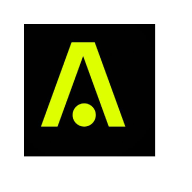

Autograph
My work
Product Marketing Manager, Feb 2024 - Jan 2025.
Go-to-Market, Growth Campaigns, Product Marketing, Organic Social
Product marketing at Autograph, Tom Brady’s a16z-backed company. Spearheaded go-to-market strategy for three league launches (NBA, MLB, NFL) and two major feature releases, and ran the $1.2M annual marketing budget and a $50K paid social agency account.
Led brand marketing for the “Don’t Auto-Draft, use Autograph,” “Gotta Get There” ticket marketplace, and “Autograph Replay” campaigns, and used market research and user feedback to shape Autograph Replay into the product’s highest-retaining feature.
- 125,000+ users acquired in 9 months across the three league launches and two feature releases
- 53% reduction in cost per acquisition on a $1.2M budget, with paid social CPA under $3.00
- Autograph Replay reached 20%+ D7 retention, the highest of any feature
- The “Fletchair” campaign with Purdue’s Fletcher Loyer set the app’s single-day user acquisition record
- 400%+ TikTok follower growth and 2M+ monthly Instagram impressions from the organic social strategy